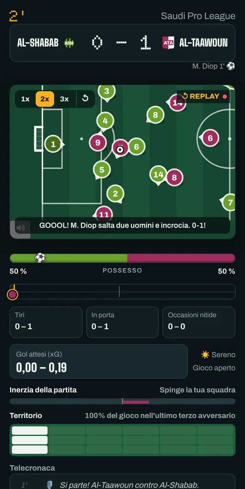
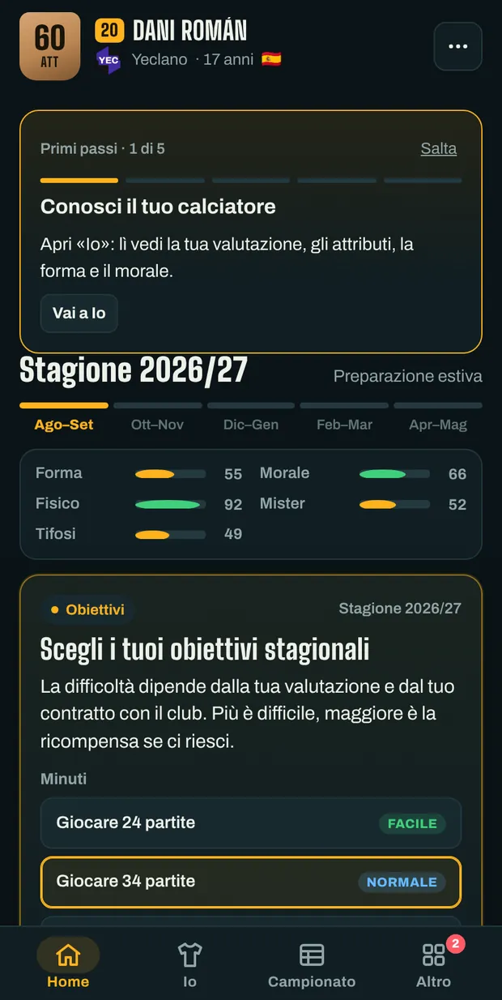
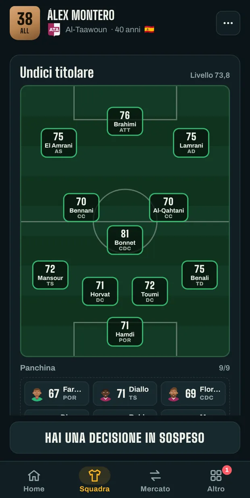
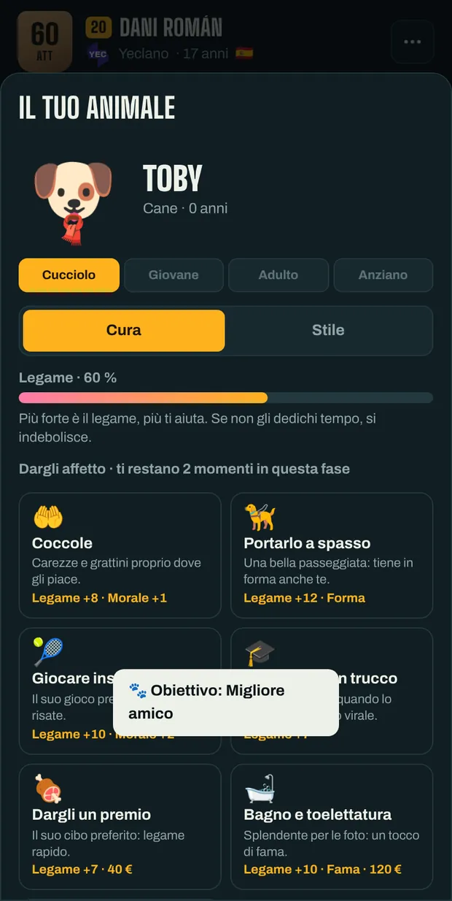

Crea il tuo calciatore e portalo fino alla leggenda.
Firma per un club, gioca le partite in diretta e decidi ogni passo della tua carriera: contratti, stampa, spogliatoio e nazionale. Oppure siediti in panchina e guida tu la squadra.
Gratis e senza account. I tuoi salvataggi restano in questo browser.
Scegli come giocare
Tre modi per iniziare. Puoi avere più partite insieme e passare dall'una all'altra quando vuoi.
-
Carriera da giocatore
Crea il tuo calciatore e vivi tutta la sua carriera, dal vivaio al ritiro. Quando appendi gli scarpini al chiodo, puoi continuare da allenatore.
-
Carriera da mister
Parti dalla panchina del club che scegli: acquisti, formazione, rinnovi e morale dello spogliatoio. E cambi tattici a partita in corso.
-
Crea il tuo club
Inventa un club con nome, colori e stemma, mettilo nel campionato che vuoi e portalo in alto con una rosa nuova.
Tutte le modalità si possono giocare nel calcio maschile o femminile.
Come si gioca
Una settimana di gioco richiede un solo tocco. Le cose importanti, la partita e le decisioni, le vedi con calma.




Cosa porta una stagione
Campionati, coppe e nazionali di mezzo mondo, con nomi inventati ispirati al calcio reale.
- Partite da vedere
- I pallini si muovono secondo il ritmo, il passaggio e il posizionamento di ogni giocatore. Rigori e punizioni li calci tu.
- Decisioni fuori dal campo
- Conferenze stampa, offerte, polemiche nello spogliatoio e momenti che cambiano una carriera.
- Il tuo mercato
- Negozia i contratti, chiedi la cessione o, da mister, compra e vendi per far quadrare i conti.
- Obiettivi e Hall of Fame
- Decine di obiettivi, trofei e record che restano anche se inizi un'altra partita.
- In cinque lingue
- Spagnolo, inglese, tedesco, italiano e francese. Cambiala quando vuoi dal menu.
- La tua partita, con te
- Copia la tua partita con un codice e continua a giocare in un altro browser o nell'app Android.
La prima partita inizia ora
Niente da installare e nessuna registrazione. Se chiudi la scheda, la partita ti aspetta dove l'hai lasciata.